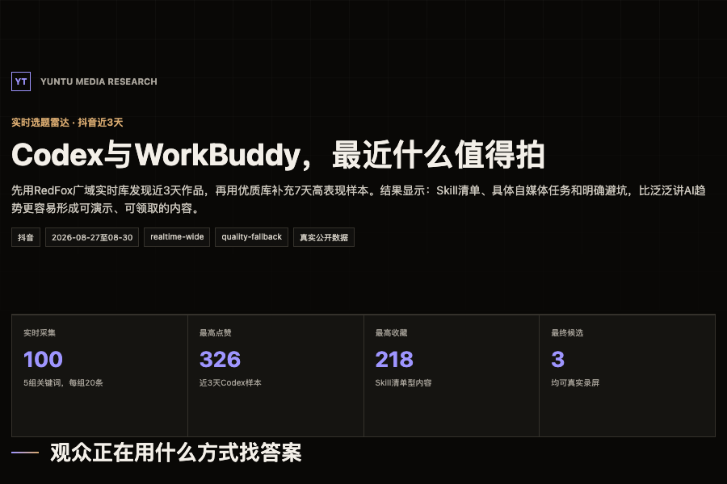
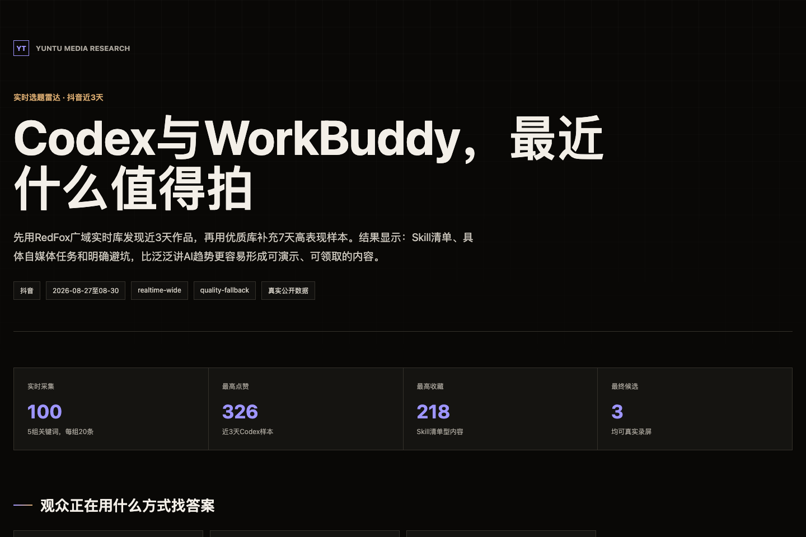
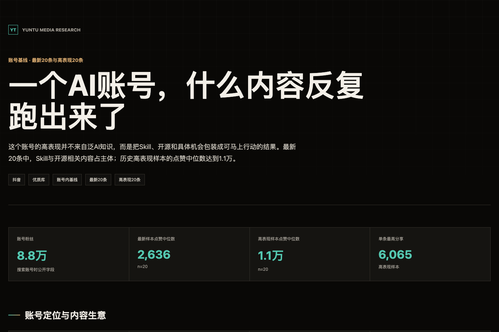
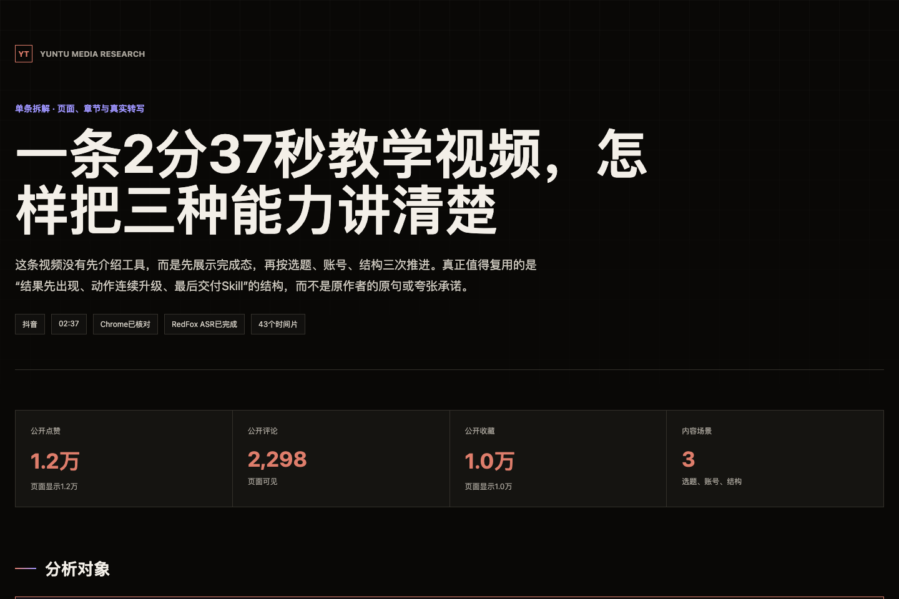
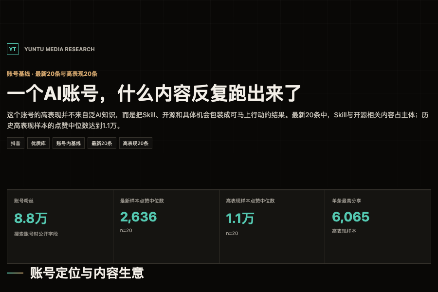
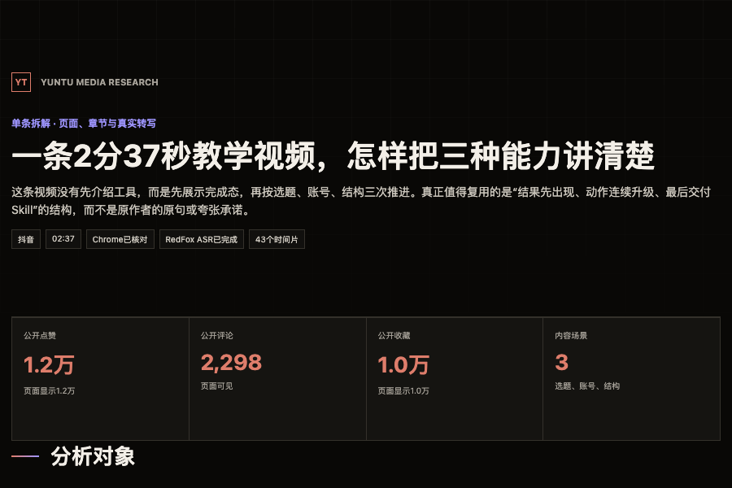

从主题发现、账号分析到单条视频拆解，把公开数据、浏览器核对和本地转写整理成可追溯、可录屏的独立报告。
免费进入学习中心Yuntu Media Research 是一个面向内容创作者的开源 Skill。它调用 Agent 已有的浏览器能力，并按需连接 RedFox，完成公开内容采集、字段统一、证据保留与 HTML 报告生成。
核心原则：页面事实、API 字段、计算、推断和假设分开。没有证据的地方直接标记，而不是让模型补齐。

推荐让 Agent 先读取仓库说明，再调用项目自带的安装器。不要把 Skill 复制进正在创作的内容项目，也不要在安装阶段提前下载 FunASR 模型。
Agent 会识别当前宿主，并安装到对应的标准 Skills 目录。
这是结构化数据通道。尚未配置 Key 时只完成安装，不产生付费请求。
只返回是否就绪，不显示 API Key。宿主需要重载时，Agent 必须明确提示。
安装地址：github.com/vitchen233/yuntu-media-research
验证标准：doctor 返回档案状态、SDK 状态和 Key 状态；不能用“安装成功”替代真实检查。
初始化分两步。创作者档案决定“替谁研究”；RedFox 配置决定“能否批量采集”。两者分开保存，不会写入公开仓库。
最低必填是赛道、目标受众和主要平台。当前任务输入优先于长期档案，因此换一期主题不需要反复修改人设。
默认位置
macOS / Linux：~/.config/yuntu-media-research/
Windows：%APPDATA%\yuntu-media-research\
Key 由用户在本机终端隐藏输入。不要粘贴到聊天，不要写入截图、报告、临时问卷或 GitHub。
只有执行采集才可能产生费用。
采集前先生成请求计划和费用估算，等待用户确认。
优先级：本次任务明确输入 > creator-profile.json > Skill 默认值。单期热点、临时标题和一次性工具偏好不会污染长期档案。
适合“今天讲什么”“某个工具还有没有热度”“这个主题的观众到底在问什么”。Skill 会区分创作者集中供给与观众真实需求。

每条候选必须说明开头能展示什么真实完成态。
不推荐“让 AI 自动办公”这类无法直接实拍的空题。
对标作品和数据来源会进入来源清单与报告。
适合研究对标博主、内容支柱和反复有效的钩子。报告会同时比较最新作品与账号内高表现作品，避免只挑几条凭感觉总结。

评论不是前置条件。主页分析主要依赖公开主页、作品列表、账号内基线和代表作品。没有评论不能成为中断分析的理由。
先用浏览器核对页面与画面，再按时间轴拆解开头承诺、第一份证明、动作推进、注意力变化和结尾承接。

FunASR 不在 Skill 内。它只是按需调用的外部开源能力。源码、虚拟环境、模型权重和媒体文件都保存在 Skill 仓库之外。
主页和单条分析完成后，不必再次付费采集。Skill 可以直接读取已保存的原始数据、来源清单、转写和报告 JSON。
主题选题调研
选择代表作者
拆解高表现单条
提炼可复用结构
生成统一报告入口
拍演示时：先让 Agent 每完成一步都告诉你产物路径，再继续下一步。这样既能控制费用，也方便录制每个可见结果。
三类报告使用相同的追溯原则，但回答不同的问题。截图只展示首页，完整 HTML 还包含图表、样本、来源、失败记录和限制。


不要把漂亮报告当作正确性的证明。真正的验收标准是：样本可追溯、字段不补造、失败有记录、判断能回到来源。
Skill 会优先使用浏览器核对公开单条，再用 RedFox 补批量数据。确实需要完整语音文案时，优先调用本机 FunASR。
重新加载 Agent，确认安装目录和 SKILL.md 存在。
运行 install.py --with-deps，或按 README 安装 requirements.txt。
增加必须命中的词组，并保留排除原因，不能删除噪声伪装准确率。
需要排错帮助：添加微信 TQwendao，备注“Skill”，并说明你使用的 Agent、系统和 doctor 返回的状态。不要发送 API Key。
建议把本页和下一页一起发给第一次使用的朋友。完整提示词保存在仓库内，Agent 也可以按当前任务自动推荐最匹配的一条。
skills/yuntu-media-research/references/prompt-library.md
skills/yuntu-media-research/references/local-transcription.md
skills/yuntu-media-research/references/first-run.md
我会继续公开更多面向内容创作者的 AI 实战流程、Skills 和小工具。遇到安装、配置或使用问题，也可以带着具体任务来交流。
免费进入学习中心